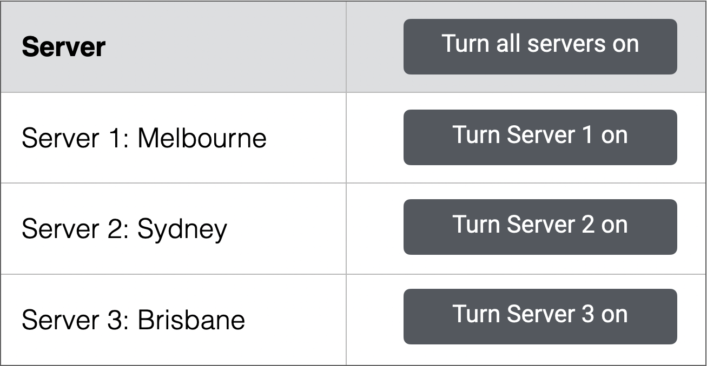
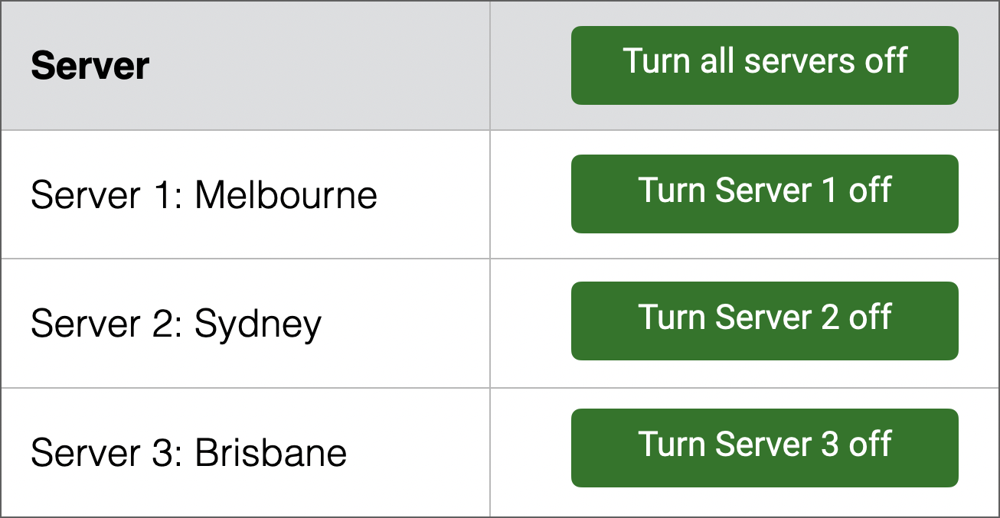
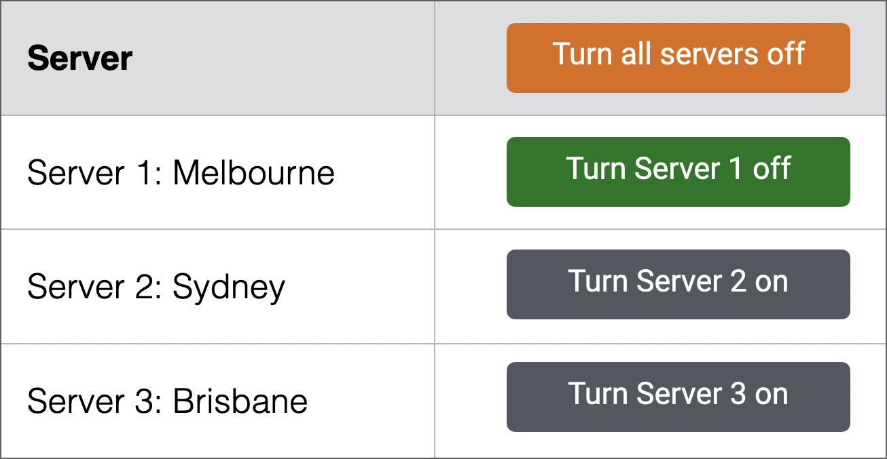

A quick explanation of aria-pressed - including an example, when it can be used, and when it should not be used.
An example to set the scene
Imagine a table listing a set of servers. At the right, each server has a button that lets you switch the server "on", or back to the default state of "off".
Above these server buttons, there is an overall button that allows you to switch all servers "on" or "off".
The image below shows all buttons in the default state of "off".

The image below shows all buttons in the new state of "on".

But what happens if you switch Server 1 from "off" to "on"?
The overall button would change to a new state between "all off" and "all on", called a mixed state.
For this example, the overall button has been coloured orange to help flag this mixed state.

If this overall button is activated again, all child buttons would be immediately turned off, so they all return to the same state.
This is a deliberately detailed example to show the "mixed" state in action. The full working example also explores some of the design and UX issues involved with this type of control.
But how can we inform assistive technologies users of these different states?
The aria-pressed attribute
aria-pressed tells assistive technologies whether a toggle button is currently pressed. It accepts three values: true, false, or mixed.
These values can be changed dynamically using JavaScript based on user input.
In our example, the overall button would initially be:
<button type="button" aria-pressed="false">
Turn all servers on
</button>When activated, this overall button would change to:
<button type="button" aria-pressed="true">
Turn all servers off
</button>If a child button were to be activated, the overall button would change to:
<button type="button" aria-pressed="mixed">
Turn all servers off
</button>Which controls can use aria-pressed?
- Native buttons: HTML alone doesn’t provide pressed or mixed states.
- Custom controls: a
<div>can be used as a toggle button.
Be aware that custom controls require additional accessibility features. They need to:
- Have
role="button". - Receive keyboard focus, for example with
tabindex="0". - Respond to expected keyboard commands such as Enter and Space.
- Have clear visual states for default, hover, focus and pressed.
When to use aria-pressed
- When a button represents a two-state or three-state toggle that the user can switch, and the state remains until they change it again.
- When the button represents a state, rather than simply triggering an action.
- When a group of related toggle buttons allows more than one button to be active at the same time.
- When a single toggle button represents the combined state of several related controls, including when those controls are not all in the same state.
When not to use aria-pressed
- On a button that triggers a one-off action, such as "Save," "Delete," or "Submit." These buttons perform an action rather than represent a persistent state.
- On a button that opens or reveals something, such as a menu, dialog, accordion panel, or additional content. Use attributes such as
aria-expandedwhen the important state is whether content is open or closed. - For mutually exclusive options where only one option can be selected at a time. Use the semantic pattern that matches the control, such as tabs, radio buttons, or another appropriate single-select pattern.
- For checkbox-style settings in a form. If the control behaves like a checkbox, use a native checkbox where possible, or
role="checkbox"witharia-checked. - On a button simply because its appearance changes when it is activated.
Takeaway
aria-pressed provides a clear way to communicate the current state of toggle buttons, including when that state is mixed.